Lighting the world: our sense of vision
Just by seeing is believing, I don’t need to question why.
Sung by Elvis Presley. Lyrics by Red West & Glen Spreen
The song lyric above from ‘Seeing is Believing’, made famous by Elvis Presley, encapsulates the power we give our sense of vision. This lyric is one of many examples in our language which indicates how important we consider vision to be. For example, phrases such as ‘I see’, intended to mean that we understand, or ‘A picture paints a thousand words,’ rely on the metaphor of vision. Similarly, in business and industry, organisations typically have vision statements, which outline what they want to achieve. All these phrases point to the importance of vision in our everyday lives. In keeping with our approach to the other senses, we will now begin our journey to understanding vision, with the signal that reaches our senses – the visual stimulus.
Light: the wave and the particle
The signal detected by the visual system is light that is either reflected from a surface or emitted from a source, such as a light bulb or natural sources of light like the sun. We can detect light ranging in intensity or luminance, measured in candela per metre squared (cd m-2), from 10-6 to 108 cd m-2. To give some context to this, this incorporates everything from a dimly lit night sky to the sun. A typical computer screen, like the one you may be reading from now, has a luminance of 50-300 cd m-2. The light we can detect is just a small part of electromagnetic spectrum (Figure 4.31).
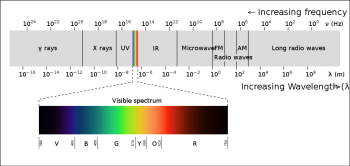
This electromagnetic spectrum includes other signals you may be familiar with, such as radio waves, X-rays and microwaves, but the visible light spectrum spans the wavelengths of 380-780 nm, which corresponds to a frequency range of 7.9 x 1014 – 3.8 x 1014 Hz (790000000000000 – 380000000000000 Hz), what we see as the colours from violet to red.
Looking at Figure 4.31, which wavelength and frequency is associated with violet?
Violet is at the end of the visible light spectrum with a wavelength of 380nm and a frequency of 7.9 x 1014 Hz.
Waves in this spectrum are transverse waves and consist of simultaneous variations in electrical and magnetic fields at right angles to each other (Figure 32). Unlike the sound waves you learnt about for hearing, electromagnetic waves do not require a medium to be transmitted, so light can travel through a vacuum.
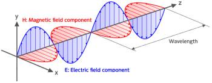
The perceptive amongst you will have spotted that the title to this section indicates that light is not just a wave, but also a particle. This subheading hints at a fierce scientific debate between some of the most famous scientists in history – a Who’s Who of the Royal Society. Isaac Newton believed that light was made up of particles, referred to as photons, whilst his rival Robert Hooke believed light was a wave. Over time, experiments and calculations by James Clerk Maxwell appeared to prove Hooke right, and the once-fierce debate was calmed.
However, the discovery of the photoelectric effect (see Box: The photoelectric effect, below) reignited this debate and drew the attention of Albert Einstein. He proposed a new theory: that light was not made of waves or particles, but both – light was made of wave packets or photons. This idea was elaborated on to show that some experimental findings are best explained when we conceive light as a wave, whilst others work best when it is described as a particle, and others still can work with either explanation. It was this work that led to Einstein’s Nobel Prize in physics.
The Photoelectric Effect
 A Physical Treatise on Electricity and Magnetism, 2nd Ed., Vol.1, D. Appleton & Co., New York, p.32, fig.9. Available from: https://en.wikipedia.org/wiki/Photoelectric_effect")
The photoelectric effect refers to the emission of electrons from a material when an electromagnetic radiation hits that material. It is best demonstrated when the material is a metal. When an electromagnetic radiation hits a metal, the energy within it can transfer to the electrons within the metal, and if that energy exceeds the binding energy (the energy keeping the electron in the metal), the electrons can be ejected from the substance. Critically though this will not happen with just any radiation, it only happens with very high energy sources. The energy within electromagnetic spectrum is related to its frequency and wavelength, such that the waves with the highest frequency, and therefore lowest wavelength, have the most energy. This means light at the violet end of the visible spectrum has more energy than light at the red end. The effect can be demonstrated using an electroscope (Figure 4.33). In this gold-leaf electroscope, the two gold leaves hanging down are separated when negatively charged but, if high energy photons are delivered to the plate above, causing the loss of electrons, the leaves fall back together. The fact that this effect only worked for some wavelengths of light was critical in understanding light as both a wave and a particle.
Now that we have examined the nature of the signal in vision, it is helpful to look at how that signal can be detected. From this it might be expected that the next section will focus on transduction, but in the visual system there is quite a lot to do before we reach the sensory receptor cells for transduction, so we start by looking at the structure of the eye.
From light source to retina: bringing the world into focus
The sense organ of the visual system is the eye and, just like the ear, it is made up of several different parts, all of which play a critical role in ensuring we have accurate vision (Figure 4.34).
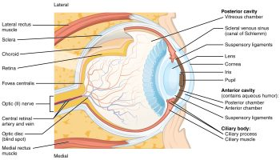
Figure 4.34 shows that there are several structures which the light must pass through before it gets to the retina, where the sensory receptor cells, referred to as photoreceptors, are located. These structures have a dioptric effect and are referred to as the dioptric apparatus, which simply means that they are involved in refracting or bending the light to a focal point. Despite there being several structures involved, the refractive power in the eye comes almost entirely from the cornea and the lens. The cornea has a fixed refractive power, but the lens can alter its power by becoming fatter or flatter. When the ciliary muscles contract the lens becomes rounder, increasing its refractive power and the ability to bend the light waves. This allows sources at different distances from the eye to be brought into focus, which means that the light waves are brought to a focal point on the surface of the retina (Figure 4.35).
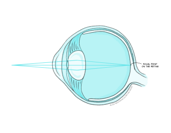
Despite this process appearing quite simple in comparison to much of what you have learnt in this chapter about the senses, refractive errors are extremely common. There are different types of refractive errors, but you are mostly likely to have heard of:
- Myopia or short-sightedness which makes distant objects look blurry
- Hyperopia or long-sightedness which makes nearby objects look blurry
- Presbyopia which makes it hard for middle-aged and older adults to see things up close
Collectively these conditions are thought to impact 2.2 billion people worldwide (World Health Organisation, 2018), with 800 million people with an impairment that could be addressed with glasses or contact lenses (World Health Organisation, 2021). To correct for these refractive errors requires lenses to be produced that can increase (hyperopia) or decrease (myopia) the overall refraction of light (see Box: Refractive errors, below ).
Refractive errors and corrective lenses
Myopia and hyperopia are two of the most common refractive errors. Myopia arises when the refractive power of the eye is too great and the focal point occurs before the retina (Figure 4.36a), whilst hyperopia occurs when the refractive power of the eye is too low, and the image has therefore not been focused by the time it reaches the retina – it would effectively have a focal point behind the retina (Figure 4.36c). To address this, lenses need to be placed in front of the eye in the form of glasses or contact lenses. For myopia, the lens counters the normal refractive power of the eye (Figure 4.36b) whilst for hyperopia it bends the light in the same direction as the eye (Figure 4.36d).
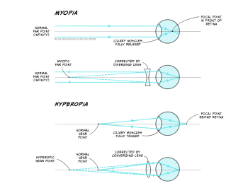
Presbyopia typically arises with age and is caused by the gradual hardening of the lens in the eye. As it hardens, flexibility is lost which means that it is difficult to focus. The solution is bifocal or varifocal lenses which have different refractive powers at different positions of the lens.
Assuming that the light waves can be brought to a focal point on the retina, the visual system can produce an unblurred image. As stated above, the retina contains the photoreceptors that form the sensory receptor cell of the visual system. However, it also contains many other types of cells in quite a complex layered structure (Figure 4.37).
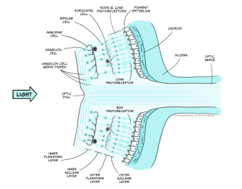
If you examine Figure 4.37 you will see that the photoreceptors form the deepest layer of the retina, that is, the one furthest from the light source. You should also spot that there are two different types of photoreceptors: rods and cones. These two different types of photoreceptors allow the visual system to operate over a wide range of luminance and wavelength conditions.
Rods outnumber cones by around 20:1 and they are found predominantly in the peripheral area of the retina rather than the fovea or central point of the retina. They are much more sensitive to light than cones, meaning they are suitable for scotopic vision – that is night vision or vision in dimly lit environments. They also provide lower acuity visual information because they are connected in groups rather than singularly to the next type of cell in the retina. This means that the brain cannot be sure exactly which of a small number of rods a signal originated from. There is only one type of rod in the human eye, and it is most sensitive to light with a wavelength of 498 nm.
Look back at Figure 4.31. What colour does this wavelength correspond to?
This corresponds to a green-blue colour.
In contrast to rods, cones are found in a much greater number within the fovea and provide us with high acuity vision due to one-to-one connections with other cells creating very small receptive fields. They are less sensitive than rods and so best suited to photopic or day vision. There are, however, three different types of cones, each with different spectral sensitivities (Figure 4.38).
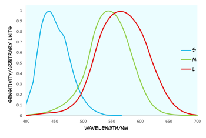
Although the cones are often referred to as short (S), medium (M) and long wave cones (L), indicative of their wavelength sensitivity, they are sometimes called blue, green and red cones, corresponding to the colours we perceive of the wavelengths that optimally activate them.
Looking at Figure 4.38, what cone would you expect to react if a light with a wavelength of 540 nm was to be detected by the retina?
You would expect to see that the red and the green cone would react because this is within their spectral sensitivity.
In the question above, we asked you about photoreceptors reacting, which leads on to the next stage of our journey through the visual system to look at this process in detail as we turn our attention to transduction.
Photoreceptors and visual transduction
To understand transduction it is helpful to look at the structure of the photoreceptors in a little more detail (Figure 4.39).
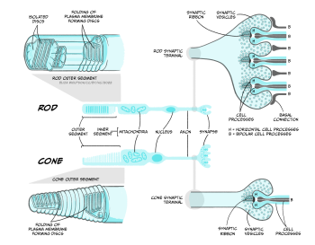
Both rods and cones contain an outer segment which includes a photosensitive pigment which can be broken down by light. The pigment in rods, which is referred to rhodopsin, contains a protein – opsin – attached to a molecule called 11-cis-retinal. The pigment in cones is generally referred to as iodopsin and still consists of opsin and 11-cis-retinal but these are three slightly different opsin molecules that have different spectral sensitivies. The process of phototransduction is similar for all rods and cones. It is described below in detail for rods, referring to rhodopsin rather than the different cone opsins, though the process is analogous in cones.
The process of visual transduction (or phototransduction) is more complex than the process for touch, pain or hearing so we will need to break this down into a series of steps, but it is also helpful to have an oversight (no pun intended) from the start (Figure 4.40).
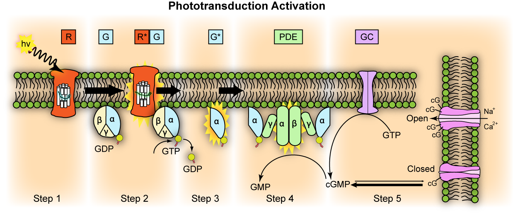
The first stage of transduction happens when the energy from a photon of light reaching the retina is absorbed by rhodopsin. The absorption of energy forces the 11-cis-retinal to undergo a transformational change and become all-trans-retinal – this ‘activates’ rhodopsin.
In the second stage, the newly-activated rhodopsin interacts with a G-protein called transducin. We briefly met G-proteins in the “Neurotransmission” chapter. Like rhodopsin, metabotropic neurotransmitter receptors are G-protein coupled receptors (GPCRs). G-proteins are a group of proteins which are involved in transmitting signals from outside of a cell to inside it and are so-called as they bind guanine nucleotides. In phototransduction, activation of the G protein transducin by rhodopsin transmits information about the light from outside the photoreceptor to inside it, while in neurotransmission, ligand binding to the receptor activates the G protein to transmit information about neurotransmitter presence at the synapse. In each case the activated G protein releases guanosine diphosphate (GDP) bound to it and instead binds a guanosine triphosphate (GTP) molecule.
In the third stage of transduction, GTP binding to the G protein, transducin, results in the β and γ subunits of transducin dissociating from the α subunit and bound GTP molecule. In the fourth stage, the α subunit and bound GTP interact with a second protein called phosphodiesterase (PDE) which in turn becomes activated.
What would you expect to happen at some point during transduction if a receptor potential is to be produced?
You would need to see ions channels open or close to allow a change in ions moving across the membrane, carrying the charge that makes up the receptor potential.
The final step sees activated PDE breakdown a molecule called cyclic guanosine monophosphate (cGMP). cGMP is produced by guanylyl cyclase and opens cGMP-gated ion channels in the cell’s membrane that allow sodium and calcium ions to enter the cell. Thus when cGMP is broken down by PDE, these ion channels close and no more calcium or sodium can enter the cell. This might not be quite what you expected to happen because in the previous senses we have looked at, transduction involves channels opening and positively charged ions coming into the cell, depolarising the cell. However in light detection, the reverse occurs: light detection causes cessation of a depolarising current and a hyperpolarisation of the membrane. The current that flows when no photons of light are being absorbed is called the ‘dark current’. One suggested reason that the visual system operates in this way is to minimise background noise. To explain this further, when there is a dark current, there is a steady flow of sodium into the cell in the absence of light. This means that any minor fluctuations in sodium channel openings will not impact the cell very much – the noise will effectively be ignored. It is only when a large number of channels close in the light that the cell membrane potential will be affected, giving rise to a clear signal.
In any event, the decrease in intracellular calcium that occurs because of channels closing when light hits the retina results in a reduction in the release of glutamate from the photoreceptor. This in turn impacts on the production of action potentials in the bipolar cells that synapse with the rods and cones. There are broadly two types of bipolar cells – ON cells and OFF cells. OFF bipolar cells respond to the decrease in glutamate release during light stimulation with a decrease in action potential firing, i.e. a decrease in glutamate causes a decrease in excitation and reduced firing. However, ON bipolar cells respond to the decrease of glutamate during light stimulation with an increase in action potential firing. Glutamate is usually excitatory, so how can a decrease in glutamate during light cause an increase in bipolar cell firing? This happens because instead of expressing ionotropic AMPA glutamate receptors, ON cells express a specific metabotropic glutamate receptor, mGluR6. When mGluR6 is activated, its G-protein subunits close a non-specific cation (positive ion) channel, hyperpolarising the cell. When glutamate release is reduced, mGluR6 is inactive, allowing the cation channel to open, and sodium ions to enter the bipolar cell, depolarising it and causing action potentials to fire. Bipolar cells in turn connect to the retinal ganglion cells, whose axons form the optic nerve and transmit action potentials from the eye to the brain.
Visual pathways: to the visual cortex and beyond
The axons of the retinal ganglion cells form the optic nerve and leave the eye through the blind spot. From the optic nerve, two routes that can be taken, a cortical and a subcortical route. The cortical route is the pathway that is responsible for much of our higher processing of visual information and has been the focus of a large amount of research and, as such, it is a logical starting point. Figure 41 shows the route that visual information typically takes from the eye to the primary visual cortex, located in the occipital lobe. In contrast to the pathway from the ear to the primary auditory cortex this pathway looks quite simple, but information is very carefully sorted throughout the pathway.

Starting from the eye, information leaves via the optic nerve. The optic nerves from both eyes meet at the optic chiasm which can be seen on the underside of the brain (Figure 4.41). At this point information is arranged such that signals from the left visual field of both eyes continues its pathway via the right side of the brain, whilst information from the right visual field of both eyes travels onwards in the left side of the brain. The first stop in the brain is the lateral geniculate nucleus (LGN) which is part of the thalamus. Each LGN is divided into six layers. Three of these layers receive information from one eye and three receive it from the other. These layers are said to be retinotopically mapped, which means that adjacent neurons will receive information about adjacent regions in the visual field.
From the LGN, information travels, via the optic radiation, to the primary visual cortex (V1), sometimes also referred to as the striate cortex because of its striped appearance. As we learnt in an earlier chapter (Exploración del cerebro: recorrido por las estructuras del sistema nervioso), the cortex consists of a series of layers from the outside of the brain to the inside. The most dorsal or outer layer is labelled Layer I and the deepest or innermost layer is layer VI. Information from the LGN enters the primary visual cortex in layer IV where different layers of the LGN enter different subsections of layer IV (Figure 4.42).
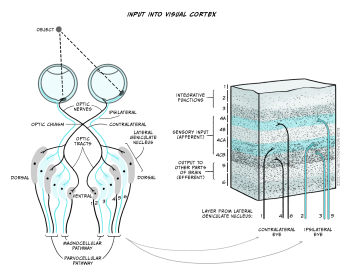
There will be many thousands of cortical neurons receiving information from each small region of the retina and these cells are organised into columns which respond to specific stimulus features such as orientation. This means that cells in one orientation column preferentially respond to a specific orientation (e.g. lines at 45° clockwise from the vertical) whilst those in the next column will respond to a slightly different orientation. Across all columns, all orientations can be represented. Primary visual cortex can also be divided into columns that respond preferentially to one eye or the other – these are termed ‘ocular dominance columns’. Theoretically, the cortex can be split into ‘hypercolumns’ each of which contains representations from both ocular dominance columns and all orientations for each part of the visual field, though these do not map as neatly onto the cortical surface as was once theorised (Bartfeld and Grinvald, 1992).
However, despite the exquisite organisation of the primary visual cortex, information does not stop at this point. In fact visual information travels to many different cortical regions – with 30 identified so far.
Can you recollect how auditory information was divided after the primary auditory cortex?
It was divided into a dorsal and ventral pathway.
Visual information can also be divided into a dorsal and ventral pathway. The ventral pathway which includes V1, V2, V4, and further regions in inferior temporal areas is thought to be responsible for object identity i.e., a ‘what’ pathway. The dorsal stream which includes V1, V2, V3, V5 supports detection of location and visually-controlled movements (e.g., reaching for an object), i.e., a ‘where’ pathway (Figure 4.43).
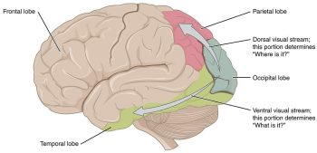
We mentioned that there is also a subcortical pathway that visual information can take through the brain. In fact there are several different subcortical structures that receive visual information but one of the main ones is a structure call the superior colliculus. This name may sound familiar because you have already learnt about the inferior colliculus in your exploration of hearing. The superior colliculus sits just above the inferior colliculus, on the surface of the midbrain. Although often overlooked when describing visual processing, the superior colliculus is thought to be involved in localisation and motion coding. It has also been implicated in an interesting phenomenon termed Blindsight (see Box below, Blindsight: I am blind and yet I see).
Blindsight: I am blind and yet I see
Blindsight was first described in the 1970s by researchers who had identified residual visual functioning in individuals who were deemed to be clinically blind due to damage to the visual cortex (Pöppel, Held, & Frost, 1973; L Weiskrantz & Warrington, 1974). These individuals reported being unable to see, but could detect, localise or discriminate stimuli that they were unaware of at higher than chance levels (i.e., greater than the levels that would be expected if they were just guessing). Later work allowed a further distinction to be made into blindsight Type 1, where the individual could guess certain features of the stimulus at higher levels than chance e.g., type of motion without any conscious awareness of it, and Type 2 where individuals could detect a change in the visual field but do not develop any perception of that change (L. Weiskrantz, 1997).
Several explanations have been proposed for this interesting phenomenon:
- Areas other than primary visual cortex underlie the responses, including the superior colliculus, which has been shown to provide quick crude responses to visual stimuli.
- Whilst much of the primary visual cortex is destroyed in people with blindsight, small pockets of functionality remain, and this explains the residual abilities.
- The LGN is capable for detecting key visual information and passing this directly to other cortical areas which could explain the phenomenon.
Research continues into blindsight and the role of several brain structures in visual processing, but the existence of this phenomenon has demonstrated that subcortical pathways and structures outside the primary visual cortex can still play a significant role in visual processing.
We have now discussed transduction and pathways for vision but not said much about specific features of the visual scene are detected. As you will probably have guessed this is an extremely complicated process and so we will focus just on three components of the visual scene in the next section: colour, motion and depth.
Perceiving the world: colour, motion and depth
Colour processing is critical to our perception of the world, and you learnt earlier in this section that we have three types of cones with distinct but overlapping spectral sensitivities. These three types of cones in the retina are the start of our colour perception journey. The presence of three types of cones is referred to as trichromacy. The development of trichromacy is thought to offer an evolutionary advantage because it can help identify suitable foods and better discriminate their ripeness. For example, the ability to differentiate red-green is thought to be important as reddish colours in fruits are indicative of higher energy or greater protein content. Work with humans suggest colour remains important in food preferences (Foroni et al., 2016).
The output from the three types of cones is thought to be translated into an opponent colour system in the retinal ganglion cells which can then give rise to specific channels of information in the visual system, referred to as the opponent processing theory of colour processing (Figure 4.43):
- A red-green channel which receives opposing inputs from red and green channels.
- A luminance channel which receives matching inputs from red and green channels.
- A blue- yellow channel which receives excitatory input from blue channels and inhibitory input from the luminance channel (which in turn is created from excitation from red and green cones).
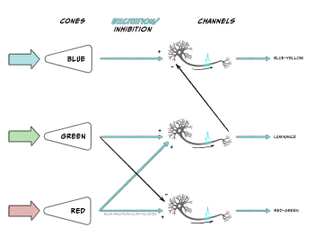
Cells that respond in line with this theory have been found in the LGN and the primary visual cortex. Further along in the ventral pathway, V4 has been found to contain neurons which respond to a range of colours i.e., not just red, green, blue and yellow (Zeki, 1980). This area receives input from V2 and sends information onwards to V8. The latter of which appears to combine colour information with memory information (Zeki & Marini, 1998).
Imagine looking out of your window on a bright morning to the leaves on the trees outside in the sunshine. Now consider looking out a few hours later when the weather has become dull and overcast. Do you perceive that the leaves have changed colour?
Hopefully you answered ‘No’ this question because you know that the leaves have not changed colour. But how do you know this?
The fact that we can perceive colour as unchanging despite overall changes in luminance is because of a phenomenon called colour constancy. The brain compensates for differences in luminance by taking into account the average colour across the visual scene.
We mentioned previously that some cells in V1 respond to specific orientations of stimuli. In addition to these cells, other cells in V1 have been found to respond to specific movement of stimuli indicating that motion detection begins early in cortical processing. However, it is V5, also known as MT (for medial temporal area), and the adjacent region V5a or medial superior temporal area, that are thought to be critical in motion detection. V5 region receives input from V1 but also from the superior colliculus which is involved in visual reflexes that are important for motion. Information from V5 is then sent onwards to V5a which has been found to have neurons that respond to specific motion patterns including spiral motion (Vaina, 1998).
Before we move on to the final subsection on visual impairment, we will look briefly at depth perception. The image created on the retina is two dimensional and yet we can perceive a three-dimensional world. This is possible because we use specific depth cues. Spend a moment looking at the visual scene in Figure 4.45.

The image shown in Figure 4.45 is complex, with multiple components including the house, fountain cascade, trees and the landscape beyond the house leading to the horizon. But how do we know how all the components fit together? For example, how do we know which trees are in front of the house and which are behind it or whether the trees in the distance are far away or just small? We can interpret the scene using depth cues including:
- Interposition: Objects which obscure other objects are closer to the viewer than the ones they obscure.
- Linear perspective: Parallel lines will converge as they move further away. This is illustrated with the sides of the fountain cascade in the image.
- Size constancy: Objects which appear smaller are likely be further away so trees in the distance will be smaller than those nearby because they are in the distance rather than because they differ in size.
- Height in the field: The horizon tends to appear towards the middle of the image with objects below the horizon nearer to the observer than the horizon and those close to the bottom of the image the nearest to the viewer.
We also obtain visual cues by comparing the images we have from the left and right eye – these are binocular cues. For example, when our left and right eye receive slightly different images, referred to as binocular disparity, this can alter our depth perception. It is through compiling cues like this, along with discrete information about colour, orientation and motion, that we can create a perception of the world around us.
Blindness: causes, impact and treatment
Globally, the main causes of visual impairment are uncorrected refractive errors, as discussed in Box 8. However, these do not typically result in blindness. The leading cause of blindness is cataracts which accounts for 51% of blindness worldwide (Pascolini & Mariotti, 2012). Cataracts occur when the lens of the eye develops cloudy patches, losing the transparency which is critical for transmitting light. Individuals may experience cataracts in one or both eyes. As the lens becomes cloudy, light cannot reach the retina. The National Institute for Health Care and Excellence (NICE, 2022) have identified several risk factors for cataracts including:
- Ageing – most cataracts occur in people over 60 years of age
- Eye disease – in this case the cataracts can occur because of other conditions
- Trauma – the cataracts arise due to injury to the eye
- Systemic disease – the cataracts arise because of other conditions, for example, diabetes
Aside from a decline in visual abilities to the point of blindness, cataracts have been associated with wider impact on health. In age-related cataracts the presence of cataracts is related to cognitive decline and increased depression (Pellegrini et al., 2020).
At the time of writing the only proven effective treatment for cataracts is surgery to replace the lens of the eye with a synthetic lens. These lenses cannot adjust like the natural lens so glasses will typically need to be worn after the surgery. The surgery is short (around 30 mins) and carried out under a local anaesthetic with a 2-6 week recovery period. These operations are considered routine in countries like the UK, but in low- and middle-income countries, eye care is often inaccessible, and cataracts can cause blindness.
After cataracts the next leading cause of blindness is glaucoma, accounting for 8% of cases followed by age-related macular degeneration (AMD), accounting for 5% of cases (Pascolini & Mariotti, 2012). Glaucoma refers to a build-up of pressure within the eye that can lead to damage to the optic nerve. This build-up happens because the fluid in the eye cannot drain properly, and it typically happens over time. As with cataracts, the condition is more common in older people. Several treatment options exist for glaucoma including use of eye drops, laser treatment and surgery, all aiming to reduce the intraocular pressure, but damage may be irreversible. Perhaps unsurprisingly, this condition is also associated with poorer quality of life (Quaranta et al., 2016).
For both cataracts and glaucoma, the site of damage is not specifically the retina and the photoreceptors. However, AMD does result from damage to the retina. In this case, the macular region of the retina deteriorates causing blurred central vision, although peripheral vision is intact, meaning it only causes complete blindness in a small percentage of people. As indicated by the name, this is an age-related condition such that older people are more likely to develop it, but other risk factors include smoking and exposure to sunlight. Whilst the remaining vision might suggest less impact on individuals than other types of visual impairment, it is still associated with reduced quality of life, anxiety and depression (Fernández-Vigo et al., 2021).
There are two types of age-related macular degeneration: dry and wet. Dry AMD occurs because of a failure to remove cellular waste products from the retina. These products build up causing deterioration of blood vessels and cell death of the rods and cones. This type of AMD accounts for around 90% of the AMD cases and there is no treatment for this type of AMD. Wet AMD arises in around 10% of people with AMD as a progression from dry AMD. Here new blood vessels form in the eye, but they are weak and prone to leaking. This type of AMD can be treated with regular injections into the eye to reduce the growth of new blood vessels. An alternative to injections, or to be used alongside the injections, is Photodynamic Therapy (PDT) where a laser is directed to the back of the eye to destroy the abnormal blood vessels there.
Key Takeaways: Summarising Vision
- Our sense of vision uses light as a sensory stimulus. Visible light is part of the electromagnetic spectrum and can be conceptualised as both a wave and a particle
- Light emitted from objects or reflected off them enters the eye through the dioptric apparatus where it is bent to a focal point on the retina at the back of the eye. Most of the refractive power comes from the cornea, but the lens provides an adjustable amount of power
- Refractive errors such as myopia can arise when the dioptric apparatus is too weak or powerful, causing the focal point to be in front of, or behind, the retina. Although refractive errors are a leading cause of visual impairment worldwide, they do not typically result in blindness
- Visual transduction occurs in the photoreceptors at the back of the retina of which there are two classes: rods and cones. Rods outnumber cones overall and are more sensitive, providing vision in scotopic conditions, but provide lower acuity and are found predominantly in the peripheral retinal areas. In contrast, cones are largely found in the fovea, and are specialised for high acuity, photopic vision. There are three types of cones, each with differing spectral sensitivity, giving rise to our colour perception
- The process of visual transduction begins with activation of photosensitive pigment in the photoreceptors. After this a series steps involving G-proteins results in the closure of ion channels and therefore a reduction of calcium entering the cell. This results in reduced glutamate release. Unlike the other senses, the presence of a stimulus results in hyperpolarisation of the receptor
- Retinal ganglion cells carry information away from the retina in the optic nerve to the lateral geniculate nucleus and onto the primary visual cortex. Information is arranged according to the eye and visual field and retinotopically mapped. After leaving the primary visual cortex over 30 cortical regions will receive visual input, including those forming the dorsal and ventral stream. Subcortical pathways also exist, most notably the pathway from the retina to the superior colliculus
- Specific features of the visual scene are identified by specific neural processes. For example, colour is believed to arise through opponent processing creating red-green, blue-yellow and luminance channels in the ventral pathway. Motion sensitive cells have been found in the dorsal pathway
- Different components of a visual scene can be combined and use of specific cues e.g., linear perspective can be used to create a 3D perception from the 2D image on the retina
- Leading causes of blindness are age related and include cataracts, glaucoma and age-related macular degeneration. In all cases the condition can have a significant impact on quality of life and result in distress. Treatments exist for most of these conditions but access to those treatments varies widely across the world.
References
Bartfeld, E., & Grinvald, A. (1992). Relationships between orientation-preference pinwheels, cytochrome oxidase blobs, and ocular-dominance columns in primate striate cortex. Proceedings of the National Academy of Sciences USA, 89, 11905-11909. Neurobiology. https://www.ncbi.nlm.nih.gov/pmc/articles/PMC50666/pdf/pnas01098-0266.pdf
Fernández-Vigo, J. I., Burgos-Blasco, B., Calvo-González, C., Escobar-Moreno, M. J., Shi, H., Jiménez-Santos, M., Valverde-Megías, A., Reche-Frutos, J., López-Guajardo, L., & Donate-López, J. (2021). Assessment of vision-related quality of life and depression and anxiety rates in patients with neovascular age-related macular degeneration. Archivos de la Sociedad Española de Oftalmología (English Edition), 96(9), 470-475. https://dx.doi.org/10.1016/j.oftale.2020.11.008
Foroni, F., Pergola, G., & Rumiati, R. I. (2016). Food color is in the eye of the beholder: the role of human trichromatic vision in food evaluation. Scientific Reports, 6(1), 37034. https://doi.org/10.1038/srep37034
NICE. (2022). Cataracts. Retrieved from https://cks.nice.org.uk/topics/cataracts/background-information/causes-risk-factors/
Pascolini, D., & Mariotti, S. P. (2012). Global estimates of visual impairment: 2010. British Journal of Ophthalmology, 96(5), 614-618. https://doi.org/10.1136/bjophthalmol-2011-300539
Pellegrini, M., Bernabei, F., Schiavi, C., & Giannaccare, G. (2020). Impact of cataract surgery on depression and cognitive function: Systematic review and meta-analysis. Clinical & Experimental Ophthalmology, 48(5), 593-601. https://doi.org/10.1111/ceo.13754
Pöppel, E., Held, R., & Frost, D. (1973). Residual visual function after brain wounds involving the central visual pathways in man. Nature, 243(5405), 295-296.
Quaranta, L., Riva, I., Gerardi, C., Oddone, F., Floriani, I., & Konstas, A. G. (2016). Quality of life in glaucoma: A review of the literature. Advances in Therapy, 33(6), 959-981. https://doi.org/10.1007/s12325-016-0333-6
Vaina, L. M. (1998). Complex motion perception and its deficits. Current Opinion in Neurobiology, 8(4), 494-502. https://doi.org/10.1016/S0959-4388(98)80037-8
Weiskrantz, L. (1999). Consciousness lost and found: A neuropsychological exploration. OUP https://doi.org/10.1093/acprof:oso/9780198524588.001.0001
Weiskrantz, L., & Warrington, E. (1974). K., Sanders, M. D., & Marshall, J. Visual capacity in the hemianopic field following a restricted occipital ablation. Brain, 97(1), 709-728. https://doi.org/10.1093/brain/97.1.709
World Health Organisation. (2018). Blindness and visual impairment. Retrieved from https://www.who.int/news-room/fact-sheets/detail/blindness-and-visual-impairment
World Health Organisation. (2021). Global eye care targets endorsed by member states at the 74th World Health Assembly. Retrieved from https://www.who.int/news/item/27-05-2021-global-eye-care-targets-endorsed-by-member-states-at-the-74th-world-health-assembly
Zeki, S. (1980). The representation of colours in the cerebral cortex. Nature, 284, 412-418. https://doi.org/10.1038/284412a0
Zeki, S., & Marini, L. (1998). Three cortical stages of colour processing in the human brain. Brain, 121(9), 1669-1685. https://doi.org/10.1093/brain/121.9.1669